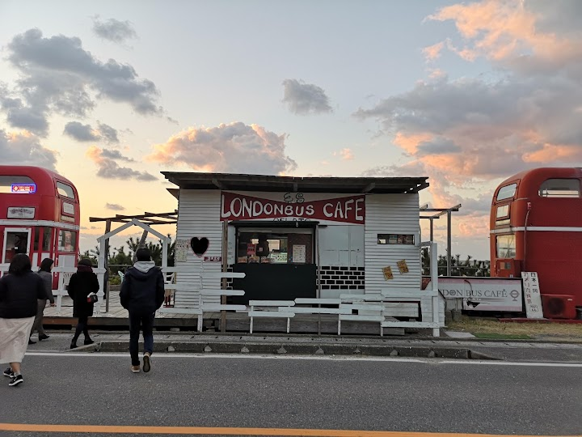
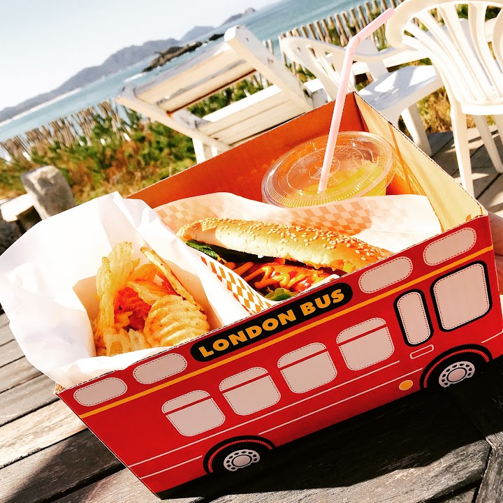
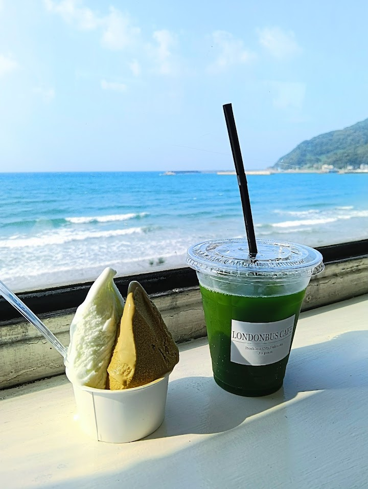
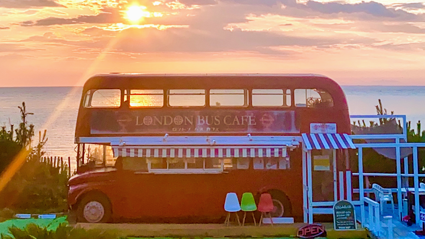
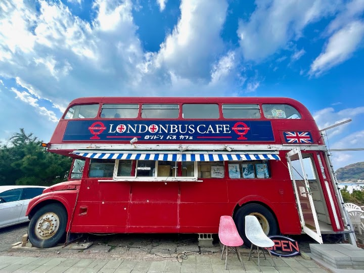
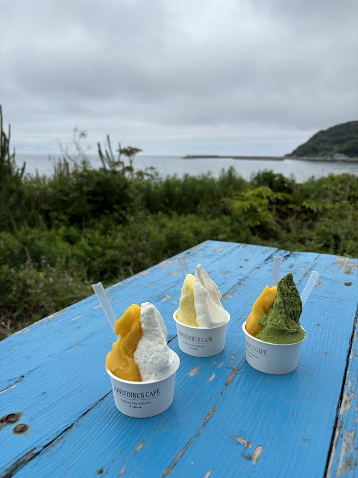

London Bus Cafe
A cafe in a red London double-decker bus at Shimanogita on the Itoshima coast; a reviewer calls it a chill stop while roaming Itoshima. Hours were not checked: check opening hours before you go.
Open in Google Maps (street view, more photos and reviews there)






Visitor tips on finding it and getting there
If you're roaming around Itoshima and need a chill spot 🌴, the London Bus Cafe is a fab find. Situated by the seaside, this quirky cafe 🚌 offers a unique chill-out zone with its iconic red bus. It's the ideal spot to recharge 🔋 with a scenic ocean view 🌊 that lets you soak in the horizon line of Itoshima. At the cafe, gelato 🍨 is the specialty, perfect for enjoying inside the bus. The food is simple, but the atmosphere and views are totally worth it. Plus, the area around the cafe is a goldmine for unique souvenirs, with several vintage clothing stores and lifestyle shops housed in school bus